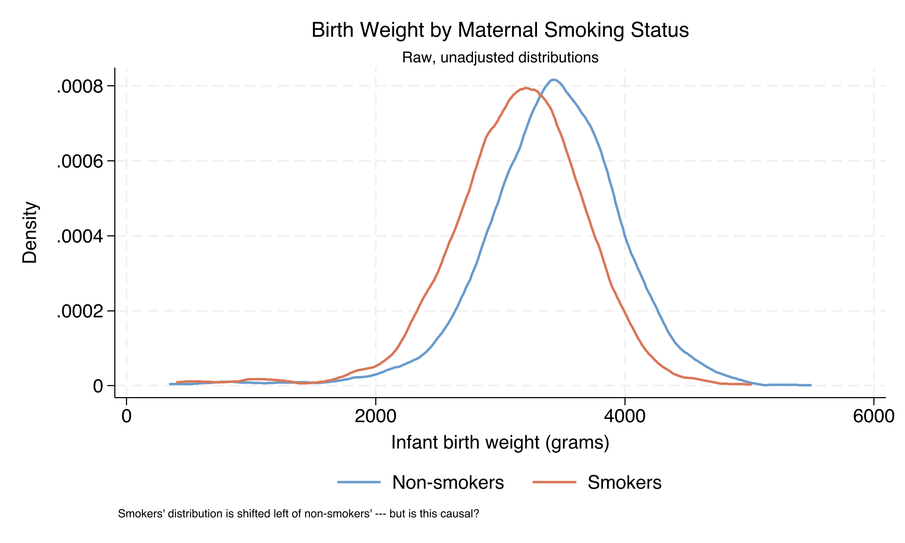
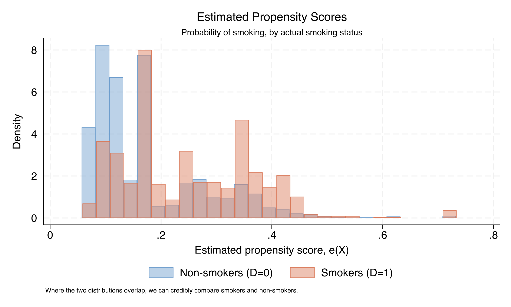
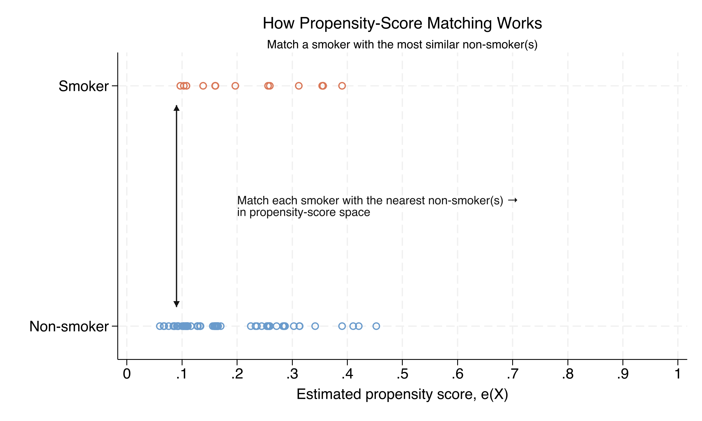
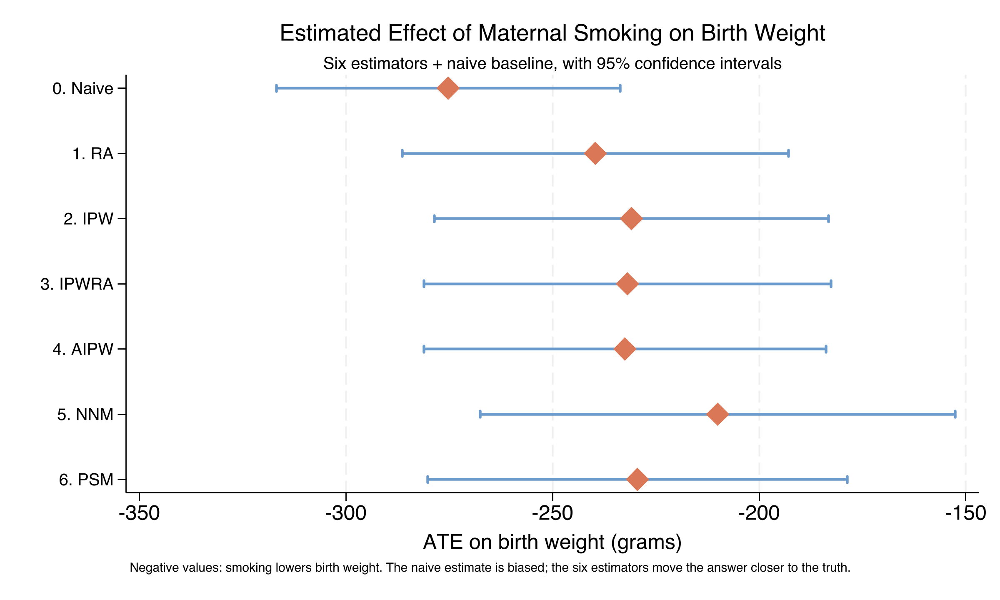

Does maternal smoking lower birth weight? Six estimators, one dataset
Nagoya University (GSID)
June 11, 2026
Act I
A raw comparison says smokers’ newborns are 275 grams lighter. Striking — and almost certainly wrong as a causal number.
Mothers who smoke are younger, less educated, less likely to be married, less likely to get early prenatal care. Each of those alone predicts a lighter baby.

Kernel density of infant birth weight. Smokers’ distribution (orange) sits ~250 g left of non-smokers’ (steel blue) — but the shift conflates smoking with confounders.
Act II
bweight)mbsmoke)Smokers are 18.6% of the sample (864 of 4,642). The minority-treatment imbalance is exactly why a difference of means is risky.
\[\tau_{ATE}=E[Y(1)-Y(0)] \qquad \tau_{ATT}=E[Y(1)-Y(0)\mid D=1]\]
We never see both potential outcomes for the same mother — causal inference is a missing-data problem in disguise.
ATE asks “what if smoking became universal?” · ATT asks “what is happening to those who currently smoke?”
\[\{Y(0),Y(1)\}\perp D\mid X\]
Among mothers identical on \(X\), smoking is as good as random. Bold, and not directly testable.
\[0<e(X)<1\]
For every covariate profile, both smokers and non-smokers exist. Testable — we check it.
Here \(e(X)=\Pr(D=1\mid X)\) is the propensity score. SUTVA — no interference, one version of treatment — rounds out the three.
| Estimator | Outcome? | Treatment? | Core mechanic |
|---|---|---|---|
| RA | ✓ | — | Predict \(Y(1),Y(0)\), average the gap |
| IPW | — | ✓ | Reweight by \(1/\hat e(X)\) |
| IPWRA | ✓ | ✓ | RA with IPW weights |
| AIPW | ✓ | ✓ | RA + residual correction (efficient) |
| NNM | — | — | Match on covariates (Mahalanobis) |
| PSM | — | ✓ | Match on the propensity score |
Doubly robust (IPWRA, AIPW): consistent if either model is right. NNM is the only fully model-free estimator.
A precise estimate of the wrong quantity — it absorbs the causal effect plus every covariate that differs between the groups.
\[\hat\tau_{RA}=\frac{1}{n}\sum_{i=1}^{n}\big[\hat\mu_1(X_i)-\hat\mu_0(X_i)\big]\]
Fit one outcome model per arm, predict both potential outcomes for everyone, average the gap. \(\hat\mu_d(X)=E[Y\mid D=d,X]\).
\[\hat\tau_{IPW}=\frac{1}{n}\sum_i\left[\frac{D_iY_i}{\hat e(X_i)}-\frac{(1-D_i)Y_i}{1-\hat e(X_i)}\right]\]
Reweight every mother by the inverse of her propensity to smoke — the reweighted sample mimics a randomized experiment.
RA models birth weight; IPW models smoking. They agree to within ~9 g — the first strong signal the effect is real, not a one-model artifact.

Estimated propensity scores by smoking status. Non-smokers (steel blue) cluster low, smokers (orange) cluster high — but both span most of the unit interval. No zone where one group is absent.
Belt and suspenders: only a simultaneous failure of both models breaks them. They differ by 0.6 g.
\[\hat\tau_{NNM}=\frac{1}{n}\sum_i (2D_i-1)\left[Y_i-\frac{1}{M}\sum_{j\in J_M(i)}Y_j\right]\]
For every smoking mother, find her closest non-smoker(s) in covariate space by Mahalanobis distance, then compare birth weights.

On a 100-mother subsample: each smoker (orange, top row) is matched to the non-smoker(s) with the closest propensity score. Rosenbaum–Rubin: matching on the scalar score balances every covariate that built it.
Act III
−230 g
RA, IPW, IPWRA, AIPW, PSM all land between −229 and −240 g; NNM the lone outlier at −210 g

ATE ± 95% CI across seven specifications. The naive estimate (−275 g) is the most negative; six adjusted estimators cluster near −230 g, NNM the slight outlier at −210 g.
| Estimator | ATE (g) | ATT (g) |
|---|---|---|
| RA | −239.6 | −223.3 |
| IPW | −230.9 | −219.6 |
| IPWRA | −231.9 | −220.6 |
| NNM | −210.1 | −238.5 |
| PSM | −229.4 | −224.6 |
Four methods: ATT closer to zero than ATE. NNM reverses it — the actual smokers sit where smoking does more damage.
Objection. Machine-matching or reweighting controls cannot manufacture identification.
Response. Correct. The −230 g is identified only under unconfoundedness given \(X\) and overlap. The six methods discipline how we adjust; none rules out an unmeasured confounder — stress, income, nutrition — that drives both smoking and birth weight. Convergence is reassuring, not proof.